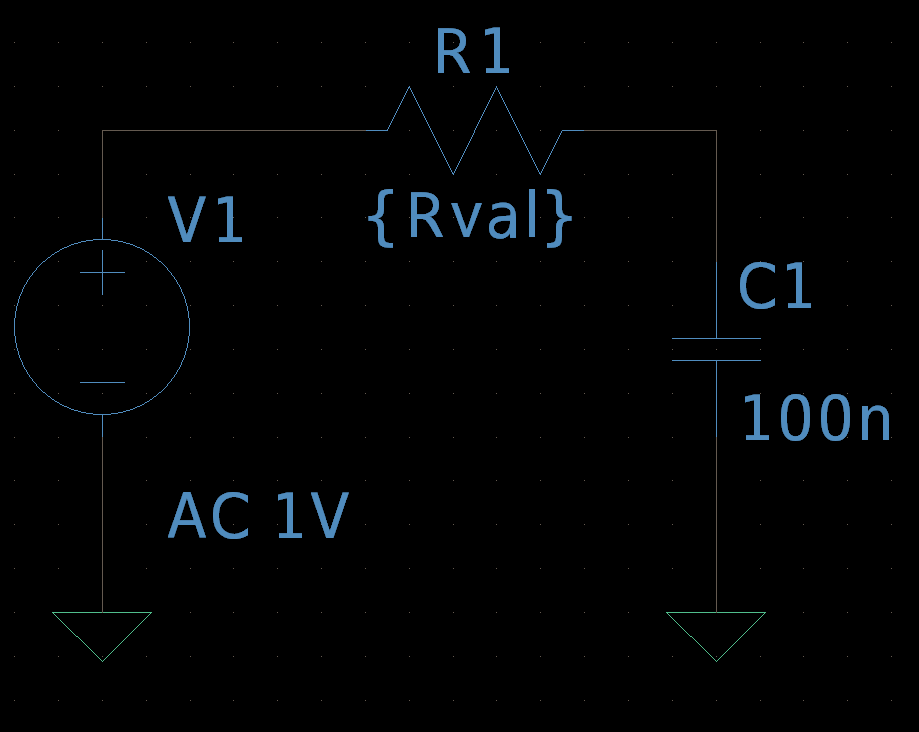
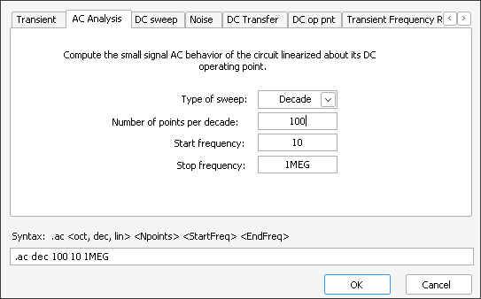
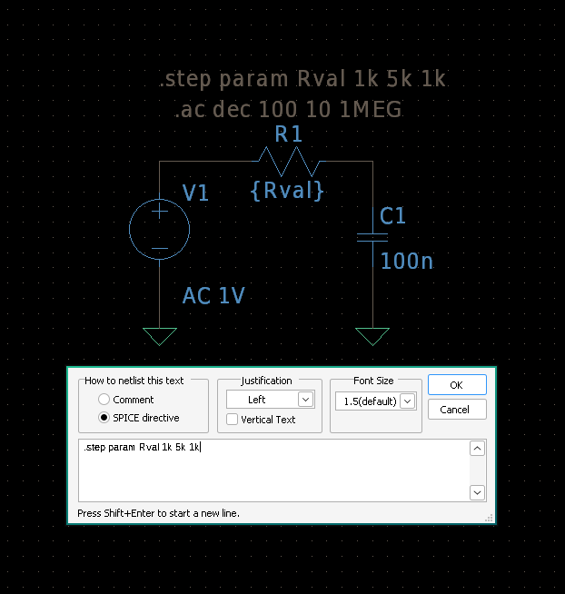
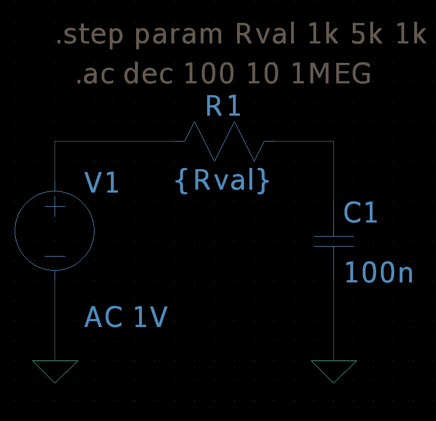

5. Advanced: Parameter Sweeps (.STEP Command)
Parameter sweeps, using the .STEP command, allow you to run a simulation multiple times while systematically varying a component value, a model parameter, or even a temperature. This is incredibly powerful for optimizing designs, performing tolerance analysis, or observing circuit behavior under different conditions.
5.1 Setting Up Your Circuit for a Sweep
To perform a parameter sweep, you first need to define a component value as a variable (or "parameter"). Let's use an RC low-pass filter as an example, sweeping the resistor value.
- New Schematic: Open a new schematic (File > New Schematic or Ctrl+N).
- Place Components:
- An AC Voltage Source (voltage): Right-click and set AC Amplitude to 1.
- A Resistor (res): Right-click on the resistor and for its Resistance value, instead of a number, type in a variable name like {Rval}. The curly braces `{}` are essential.
- A Capacitor (cap): Right-click and set its Capacitance to 100n (100 nanofarads).
- A Ground (GND).
- Wire Circuit: Connect them as a low-pass filter: Voltage Source (+) to Resistor, Resistor to Capacitor, Capacitor to Ground, Voltage Source (-) to Ground. 
- Add AC Analysis Command: We'll still need an AC Analysis command to see the frequency response. Go to Simulate > Edit Simulation Cmd, select the AC Analysis tab, and set it to Decade, 100 points, Start Frequency 10, Stop Frequency 1Meg. Place the .ac directive on the schematic. 
- Save: Save your circuit (e.g., rc_sweep.asc).
The variable name (e.g., Rval) is case-sensitive and must be enclosed in curly braces for LTSpice to recognize it as a parameter for sweeping.
5.2 Configuring the .STEP Command
Now, let's define how our parameter Rval will change during the simulation.
- Press the . (period) key on your keyboard to open the SPICE Directive window.
- In the blank SPICE Directive window, type the .step command, specifying the parameter name and its sweep range. You can choose from different sweep types:
- For a Linear sweep (from a Start Value to a Stop Value with an Increment):
Example:.step param Rval 1k 10k 1k(sweeps Rval from 1kΩ to 10kΩ in 1kΩ steps) - For a Decade or Octave sweep (logarithmic sweep, specify Start, Stop, and Number of points per Decade/Octave):
Example:.step param Rval dec 1k 100k 3(3 points per decade from 1kΩ to 100kΩ) - For a List of specific values:
Example:.step param Rval list 1k 2.2k 4.7k 10k
- For a Linear sweep (from a Start Value to a Stop Value with an Increment):
- For our example (linear sweep from 1k to 5k in 1k steps), you would type: 
LTSpice Command to type:
.step param Rval 1k 5k 1kClick OK after typing the command. The directive will appear on your cursor. Click to place it on your schematic.
You can sweep various parameters, including model parameters (e.g., transistor W/L), temperature (via .temp), or even other sources.
5.3 Running the Simulation and Analyzing Results
When you run a simulation with a .STEP command, LTSpice will perform a separate simulation for each value in your sweep. All results will be stored, allowing you to compare them.
- Go to Simulate > Run (or click the Play Button icon, or press Alt+R).
- The plot window will open. If you click on the output of your RC filter (the node between the resistor and capacitor), you will see multiple overlapping waveforms, one for each step in your sweep.
- Selecting Individual Steps:
- Right-click anywhere on the plot background.
- Select Select Steps from the context menu.
- A dialog box will appear, listing all the individual steps performed. You can check/uncheck them to hide or show specific waveforms. This is invaluable for isolating and comparing results.
- Using Cursors: You can use cursors on these plots just as you would with a single simulation. They will attach to the active trace, and you can switch between traces to compare values across different sweep steps.
Observing how the cutoff frequency shifts with different resistor values in our example clearly demonstrates the power of parameter sweeps for understanding design trade-offs.
The .STEP command is a fundamental tool for comprehensive circuit analysis and optimization in LTSpice, moving beyond single-point simulations to explore a design space.